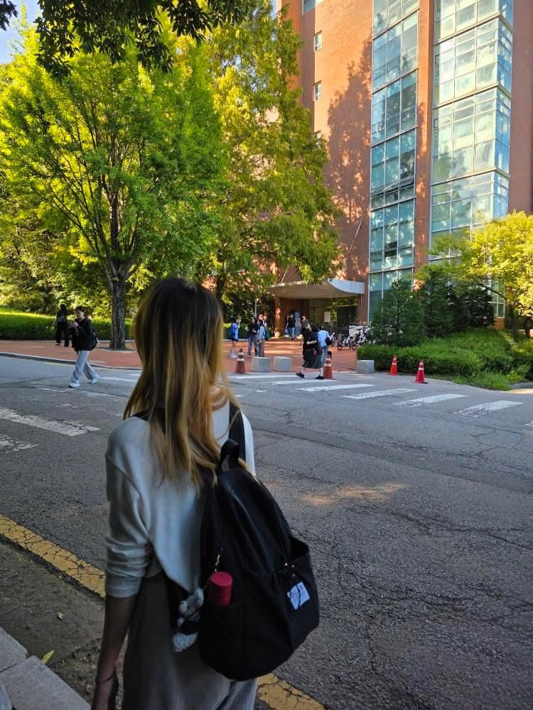

대학 이야기
학교에서 수업이 끝나고 마지막 수업을 들으러 가는 길이었다. 오르막길이라 힘들게 걷고 있었는데 친구가 뒷모습을 찍어주었다. 학교에서 찍은 몇 안 되는 내 사진이라 나름 의미가 있다. 뒤에 학교도 햇빛에 비치는 모습이 예쁘게 나온 것 같다.
저의 일상을 소개하는 블로그입니다.
학교에서 수업이 끝나고 마지막 수업을 들으러 가는 길이었다. 오르막길이라 힘들게 걷고 있었는데 친구가 뒷모습을 찍어주었다. 학교에서 찍은 몇 안 되는 내 사진이라 나름 의미가 있다. 뒤에 학교도 햇빛에 비치는 모습이 예쁘게 나온 것 같다.
집에서 엄마가 그림을 그릴 때 옆에 앉아 따로 제가 그린 그림이다. 스케치 없이 오직 물감으로만 그린 그림이라 재밌으면서도 조금 어려웠다. 입시가 끝난 후 이 날 붓을 처음 잡아서 어색해서 어려웠던 것 같기도 하지만, 나름 재밌었다.
사진에는 디저트가 메인인 것 같지만, 사실 먹으려고 만난 게 아니라 과제하려고 만난 것이다. 과제할 때는 서로 집중하느라 중간에 찍은 사진은 없다. 보통 과제 시작하기 전에 음료수를 받았을 때 사진만 찍고, 음료수를 마시면서 열심히 집중해서 과제를 해치운다.
같이 입시를 한 친구와 서울숲과 성수에서 놀고 집 가는 길에 찍은 사진이다. 먼저 서울숲에서 놀다가 성수까지 걸어가 또 놀았다. 놀 때는 정말 즐거웠지만, 둘 다 하루 종일 놀고 지쳐서 사진을 자세히 보면 조금 지쳐 보일 수도 있다.